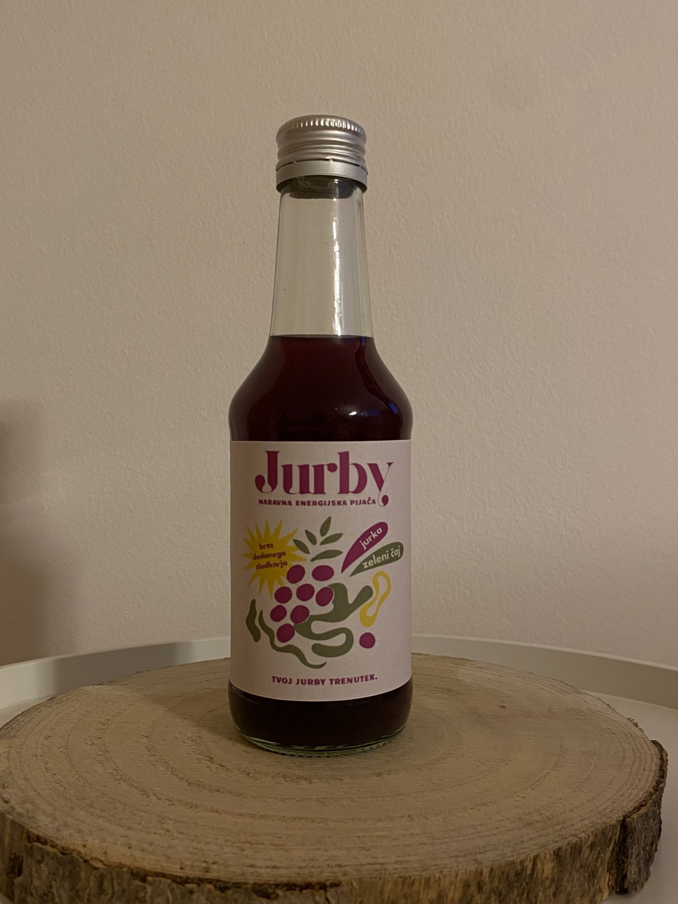
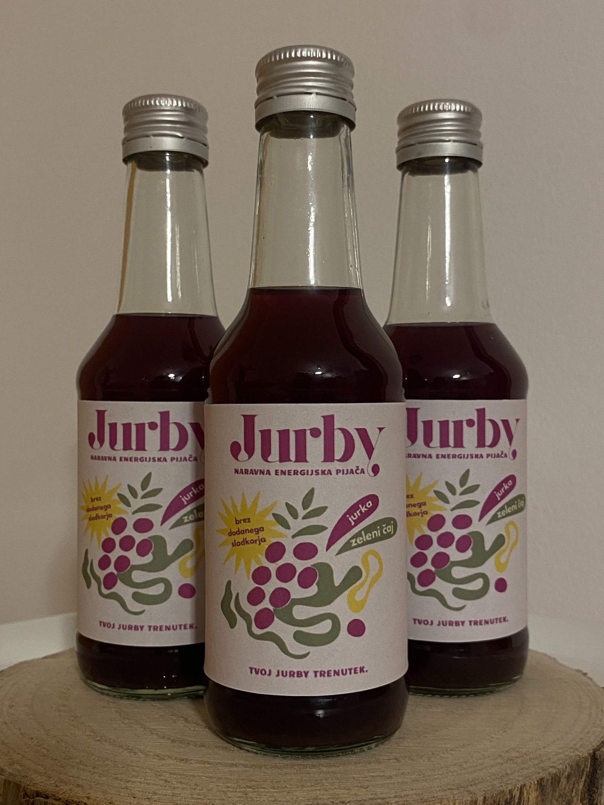
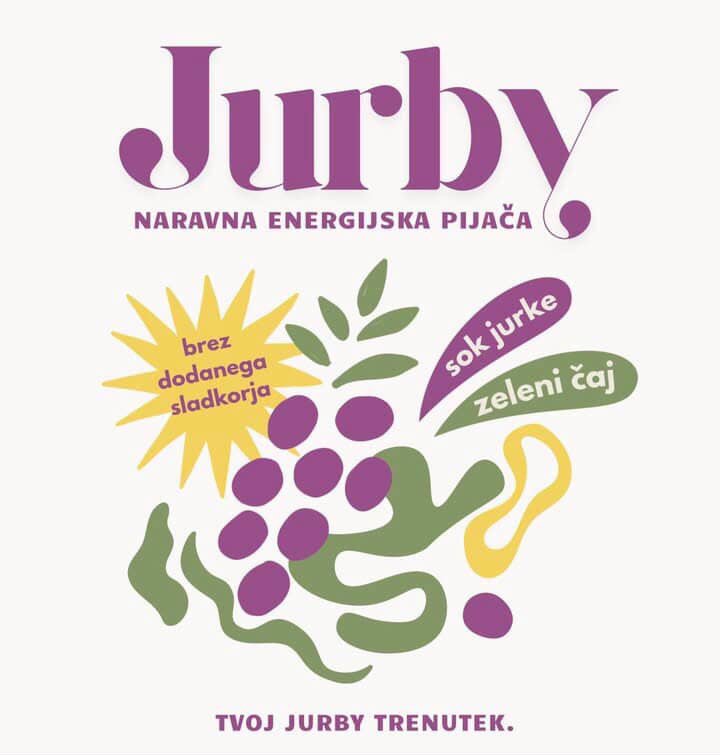
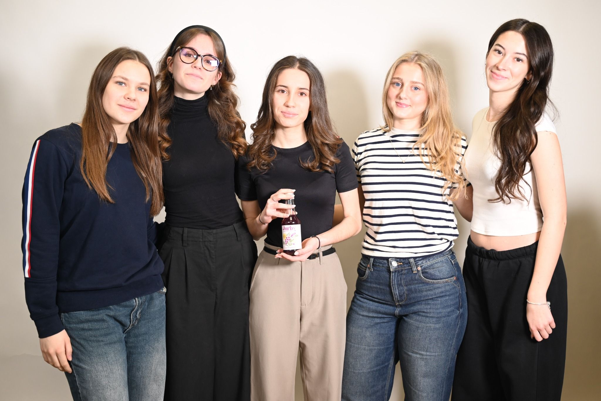

Bolj zdrava alternativa
Jurby je nastal kot odgovor na potrebo po bolj zdravi izbiri od običajnih energijskih pijač, ki pogosto vsebujejo veliko umetnih dodatkov.
Jurby je naravna energijska pijača, ustvarjena za dijake in študente, ki želijo postopen in dolgotrajen dvig energije brez umetnih dodatkov.

Razvili smo izdelek, ki združuje naravno sestavo, svež okus in sodoben pristop k energiji.
Jurby je nastal kot odgovor na potrebo po bolj zdravi izbiri od običajnih energijskih pijač, ki pogosto vsebujejo veliko umetnih dodatkov.
Zeleni čaj omogoča bolj enakomeren in dolgotrajen dvig energije, kar je posebej pomembno pri učenju in daljših miselnih naporih.
Želimo graditi prepoznavno slovensko zgodbo, ki povezuje ročno izdelavo, mladostno podjetnost in naravne sestavine.
Na spodnjih fotografijah je predstavljen naš izdelek Jurby in njegova vizualna podoba.


